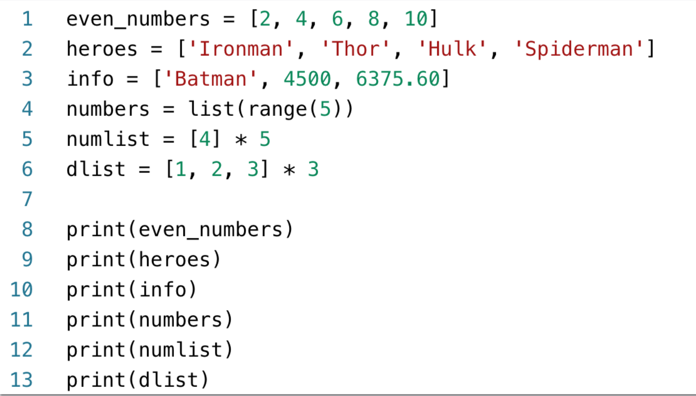
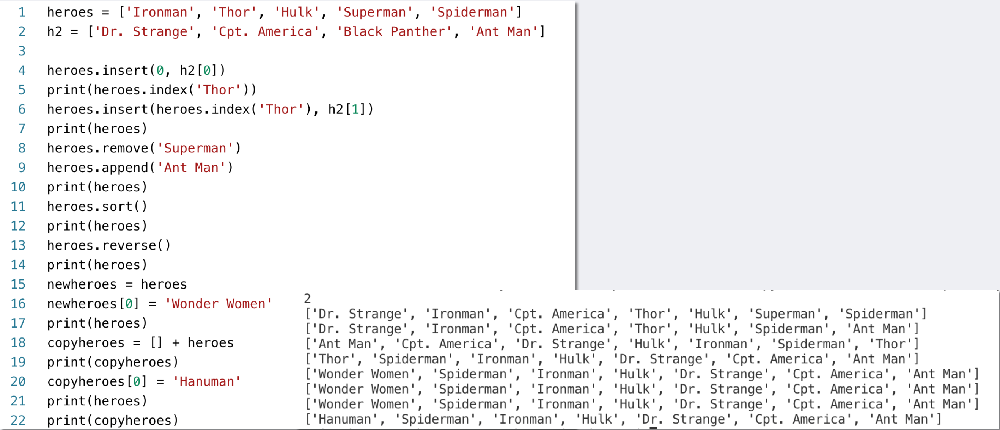

07
LISTS AND TUPLES
LISTS
Introduction
SEQUENCE TYPES
The fundamental
sequence types: lists and tuples. Both lists and tuples are sequences that can hold
various types of data. The difference between lists and tuples is simple:
•
List is mutable, which means that a program can change its contents.
• Tuple is immutable, which means that once it is created,
its contents cannot be changed.
LISTS
A list is an object that contains multiple data items. Lists are mutable, which means that their contents can be changed during a program's execution. Lists are dynamic data structures, meaning that items may be added to them or removed from them . You can use indexing, slicing, and various methods to work with lists in a program.
• List: an object that contains multiple data items
- Element: An item in a list
- Format:list = [item1, item2, etc.]
- Can hold items of different types
• print function can be used to display an entire list
• list() function can convert certain types of objects to lists
INTROLIST.PY
INTROLIST.PY
LISTS
List Methods and Useful Built-in Functions
LISTS OPERATOR
• Repetition operator: makes multiple copies of a list and
joins them together
- The * symbol is a repetition operator when applied to a sequence and an integer
- Sequence is left operand, number is right
- Generalformat: list * n
• You can iterate over a list using a for loop
- Format: for x in list :
LISTTEST.PY
LISTTEST.PY
BARISTA_PAY.PY
BARISTA_PAY.PY
LIST METHODS AND USEFUL BUILT-IN FUNCTIONS
• An IndexError exception is raised if an invalid index is used
• len function: returns the length of a sequence such as a list
- Example: size = len(my_list)
- Returns the number of elements in the list, so the index of last
element is len(list)-1
- Can be used to prevent an IndexError exception when iterating over a list with a loop
LISTOPERATOR.PY
LISTOPERATOR.PY
LIST METHODS AND USEFUL BUILT-IN FUNCTIONS
• You can use the in operator to determine whether an item is contained in a list
- Generalformat: item in list
- Returns True if the item is in the list, or False if it is not in the list
• Similarly you can use the not in operator to determine whether an item is not in a
list
• append(item): used to add items to a list – item is appended to the end of the
existing list
• index(item): used to determine where an item is located in a list
- Returns the index of the first element in the list containing item
- Raises ValueError exception if item not in the list
• insert(index,item): used to insert item at position index in the list
• sort(): used to sort the elements of the list in ascending order
• remove(item): removes the first occurrence of item in the list
• reverse(): reverses the order of the elements in the list
• del statement:removesanelementfromaspecificindex in a list
- Generalformat: del list[i]
• min and max functions: built-in functions that returns the item
that has the lowest or highest value in a sequence
- The sequence is passed as an argument
LISTMETHODS.PY
LISTMETHODS.PY
LISTS
Two-Dimensional Lists
TWO-DIMENSIONAL LISTS

• Two-dimensional list: a list that contains other lists as its elements
- Also known as nested list
- Common to think of two-dimensional lists as having rows and columns
- Useful for working with multiple sets of data
• To process data in a two-dimensional list need to use two indexes
• Typically use nested loops to process
students = [['Joe','Kim'],['Sam','Sue'],['Kelly', 'Chris']]
TUPLES
Introduction
TUPLES
• Tuple: an immutable sequence
• Very similar to a list
• Once it is created it cannot be changed
• Format: tuple_name = (item1, item2)
• Tuples support operations as lists
• Subscript indexing for retrieving elements Methods such as index
• Built in functions such as len, min, max
Slicing expressions
• The in, +,and* operators
• Tuples do not support the methods:
• append
• remove
• insert
• reverse
• sort
• Advantages for using tuples over lists:
- Processing tuples is faster than processing lists
- Tuples are safe
- Some operations in Python require use of tuples
• list() function: converts tuple to list
• tuple() function: converts list to tuple
LISTS TO FILE
Write Lists and Read Lists from File
WRITELINES.PY
WRITELINES.PY
READLINES.PY
READLINES.PY
MATHPLOT
Introduction
MATHPLOT

• The matplotlib package is a library for creating two- dimensional charts and
graphs.
• It is not part of the standard Python library, so you will have to install it
separately, after you have installed Python on your systemThe matplotlib package is
a
library for creating two-
dimensional charts and graphs.
LINE_GRAPH1.PY
LINE_GRAPH1.PY
LINE_CHART2.PY
LINE_GRAPH2 .PY
LINE GRAPH
LINE GRAPH
BAR_CHART1.PY
BAR_CHART1.PY
PLOT BAR CHART
PLOT BAR CHART
BAR_CHART1.PY
• The bar function has a color parameter that you can use to change the colors of the bars.
• The argument that you pass into this parameter is a tuple containing a series of color
codes.
BAR_CHART3.PY
BAR_CHART3.PY
PLOT PINE CHART
PLOT PINE CHART
PIE_CHART1.PY
PIE_CHART1.PY
SUMMARY
Lists, including:
- Repetition and concatenation operators Indexing
- Techniques for processing lists
- Slicing and copying lists
- List methods and built-in functions for lists Two-dimensional lists
Tuples, including: Immutability
- Difference from and advantages over lists
- Plotting charts and graphs with the matplotlib Package